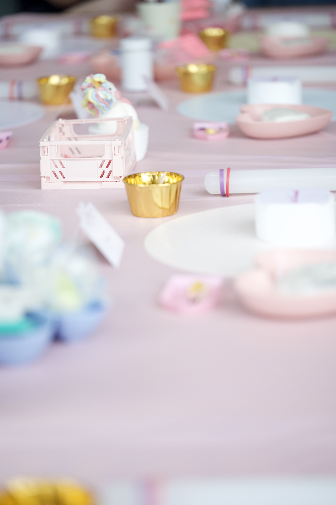
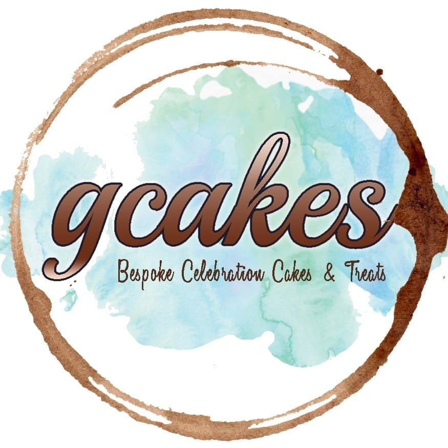
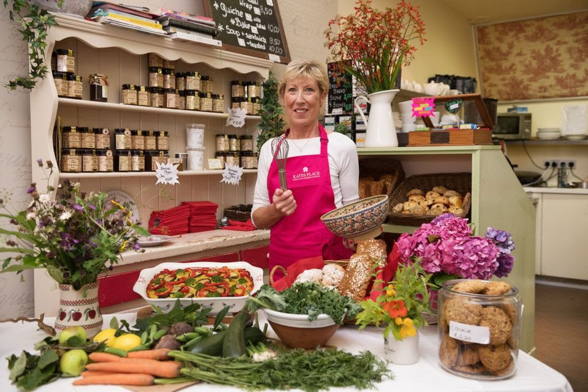

Cooking Classes in Ireland
Explore 9 Cooking classes and activities for kids across Ireland. Cooking classes are most widely available in Dublin.
Browse Cooking by county


GCakes – Cake Decorating Workshops
Cake decorating workshops using cupcakes, cookies and cakes, designed around your event, birthday or other occasion. Each workshop is very hands-on, and every guest goes away with new knowledge of cake decorating and various techniques and skills. Children's workshops are tailored to children's needs and skill level, with hands-on guidance through each process so they have fun using their creative minds while learning a new skill. For events, corporate bookings, VIP occasions and launches, workshops can be set up at your chosen location and tailored to your needs - tap 'Enquire' to host a private event in Dublin, whether social, corporate or otherwise. Please note these are not baking classes: freshly baked items are supplied for guests to bring home, but allergens are not catered for, as all items are baked and stored where nuts are also stored. In every workshop, guests take home their own sweet creations along with a box of handmade treats they've decorated themselves. All necessary utensils and tools are supplied, with decorating themed to suit the group's wishes and age range. Tween & Teen Workshops (12+ years) are slightly more advanced, covering a range of decorating skills from piping to sugar paste, 3D models and more.
View full details →
Galway Cookery Classes
We offer traditional Irish baking and cooking classes in my country home in Kilcolgan, on the West Coast of Ireland. Try your hand at scone and bread making or learn how to cook a delicious Irish stew, apple pie, Irish coffee and so much more. If you would like to cook something specific, or you have dietary requirements, feel free to send me an email and we will create a personalised menu of dishes to fit your taste. Class times can be organised to suit you, they last about 2 hours, and most include a maximum of six people. After all your hard work in the kitchen you will settle down with a hot cup of tea or coffee to enjoy the fruit of your labour. Please contact us at galwaycookeryclasses@gmail.com to book your class! We hope to see you soon :)
View full details →

Hedge School Wicklow
Master the Art of Bread Making at Hedge School Wicklow Step into the heart of Wicklow and discover the deeply satisfying craft of artisan bread making. Whether you are a complete beginner or looking to perfect your crust, this intimate, hands-on workshop at Hedge School Wicklow will guide you through the alchemy of flour, water, salt, and yeast. What to Expect Hosted in a cozy, welcoming environment, our classes are strictly limited to 4 participants . This small group size ensures you receive personalized, step-by-step guidance from our expert baker. During this immersive workshop, you will: Learn the Fundamentals: Understand the science of fermentation, hydration, and flour selection. Get Hands-On: Master essential techniques for mixing, kneading, shaping, and scoring your dough. Bake to Perfection: Learn the secrets to achieving the perfect oven spring, golden crust, and airy crumb. Enjoy the Fruits of your Labor: Gather with your fellow bakers to taste your fresh loaves with local Wicklow butter and preserves. Class Details Capacity: Maximum of 4 people per session (perfect for individuals, couples, or small groups of friends). Skill Level: Beginners and intermediate bakers are equally welcome. What’s Included: All ingredients, baking equipment, a recipe booklet to take home, and refreshments. Plus, you’ll leave with your own freshly baked artisan loaves! Note: Spaces are highly limited due to our small class size. Book your bench today and bring the timeless aroma of freshly baked artisan bread into your own kitchen!
View full details →
Alix Gardner's Cookery School
This is where young foodies are discovered. Alix Gardner's Cookery shows children the fun and wonder of cooking - they learn traditional cooking skills and have fun with good, honest, delicious food. From artisan kitchen crafts to experimenting with flavour combinations and exploring food cultures and kitchen traditions, their children's cookery courses are specifically designed to educate, inspire and engage young chefs into the world of cookery, while having a great time in the kitchen in a safe and warm environment.
View full details →

CJ Cookery
CJ Cookery offers weekly baking classes for children in a fun, safe and relaxed environment in Clontarf, encouraging discovery and creativity. During my baking classes, all children work independently to create their own masterpiece from start to finish.
View full details →

Dublin Cookery School
Dublin Cookery School offers hands-on culinary experiences for young food enthusiasts, with classes designed to build lifelong skills in a fun and supportive environment. Located in Blackrock, this award-winning school combines tradition with innovation to help kids and teens discover their passion for cooking. Join the Growing Gourmets Summer 2025 programme, with sessions available for both Juniors and Seniors. For those with a busy schedule, they've also introduced 2-day courses to fit in some quick culinary learning. With expert tutors guiding every step, students get the chance to create dishes from scratch and build confidence in the kitchen.
View full details →

Howth Castle Cookery School
Howth Castle Cookery School offers hands-on workshops designed to inspire the next generation of chefs. Set in the magnificent castle kitchen, these 2-hour classes are perfect for teens and tweens looking to develop their cooking skills in a fun and engaging environment. Workshops cover a range of exciting cuisines, including Mexican street food, sushi, gourmet pizzas, Chinese street food, pasta making, and curry & naan, with new classes added regularly so there's always something fresh to try. No matter their experience level, young chefs will learn essential techniques from professional chefs, gaining confidence and independence in the kitchen.
View full details →

Young Chef at Airfield Estate
Airfield Estate's Young Chef Workshops offer a hands-on cooking experience for budding chefs aged 8-12. Set in the beautiful Inspiration Kitchen, overlooking the estate's food garden, kids will learn to create wholesome, seasonal meals using ingredients grown on site whenever possible. Led by experienced educators, these Sunday workshops (10am-12:30pm) cover both sweet and savoury dishes, helping young chefs develop practical cooking skills and a deeper connection to fresh, sustainable ingredients.
View full details →Fairyhouse Cookery School - Ratoath
Kids cookery school/camp offering hands-on cooking lessons for children in Ratoath.
View full details →